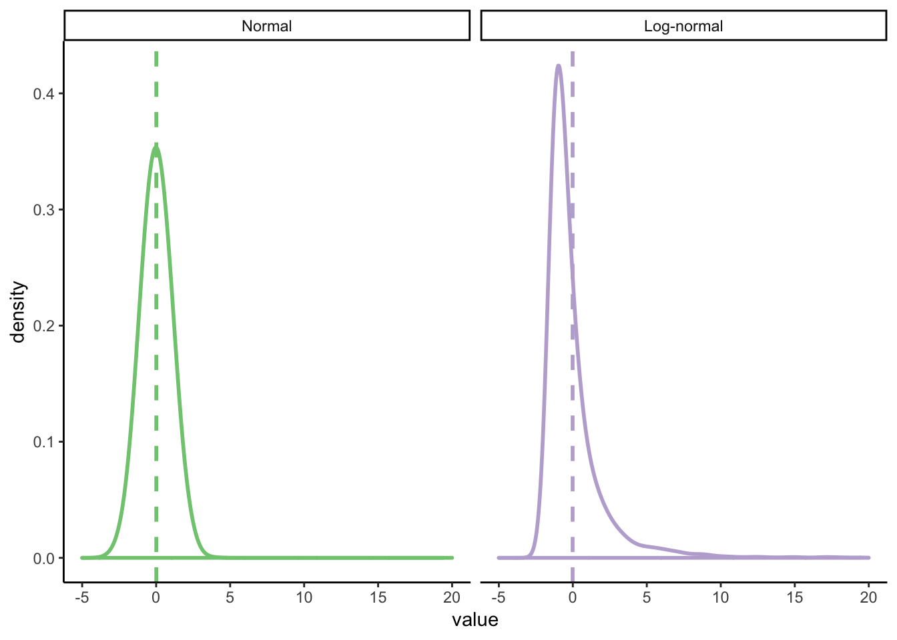

Chapter 15 Bootstrapping
This chapter was written by Andrew Lampinen.
15.1 Load packages and set plotting theme
library("boot") # for bootstrapping
library("patchwork") # for making figure panels
library("tidyverse") # for data wrangling etc.theme_set(
theme_classic() #set the theme
)15.2 What’s wrong with parametric tests?
15.2.1 T-tests on non-normal distributions
Let’s see some examples! One common non-normal distribution is the log-normal distribution, i.e. a distribution that is normal after you take its logarithm. Many natural processes have distributions like this. One of particular interest to us is reaction times.
num_points = 1e4
parametric_plotting_data = tibble(
distribution = rep(c("Normal", "Log-normal"), each = num_points),
value = c(
rnorm(num_points, 0, 1), # normal
exp(rnorm(num_points, 0, 1)) - exp(1 / 2)
)
) %>%
mutate(distribution = factor(distribution, levels = c("Normal", "Log-normal")))Let’s see how violating the assumption of normality changes the results of t.test. We’ll compare two situations
Valid: comparing two normally distributed populations with equal means but unequal variances.
Invalid: comparing two log-normally distributed populations with equal means but unequal variances.
ggplot(parametric_plotting_data, aes(x = value, color = distribution)) +
geom_density(bw = 0.5, size = 1) +
geom_vline(
data = parametric_plotting_data %>%
group_by(distribution) %>%
summarize(mean_value = mean(value), sd_value = sd(value)),
aes(xintercept = mean_value, color = distribution),
linetype = 2, size = 1
) +
xlim(-5, 20) +
facet_grid(~distribution, scales = "free") +
guides(color = F) +
scale_color_brewer(palette = "Accent")## Warning: Removed 5 rows containing non-finite values (stat_density).
ggsave("figures/log_normal_dists.png", width=5, height=3)## Warning: Removed 5 rows containing non-finite values (stat_density).gen_data_and_test = function(num_observations_per) {
x = rnorm(num_observations_per, 0, 1.1)
y = rnorm(num_observations_per, 0, 1.1)
pnormal = t.test(x, y, var.equal = T)$p.value
# what if the data are log-normally distributed?
x = exp(rnorm(num_observations_per, 0, 1.1))
y = exp(rnorm(num_observations_per, 0, 1.1))
pnotnormal = t.test(x, y, var.equal = T)$p.value
return(c(pnormal, pnotnormal))
}
parametric_issues_demo = function(num_tests, num_observations_per) {
replicate(num_tests, gen_data_and_test(num_observations_per))
}set.seed(0) # ensures we get the same results each time we run it
num_tests = 1000 # how many datasets to generate/tests to run
num_observations_per = 20 # how many obsservations in each dataset
parametric_issues_results = parametric_issues_demo(num_tests=num_tests,
num_observations_per=num_observations_per)
parametric_issues_d = data.frame(valid_tests = parametric_issues_results[1,],
invalid_tests = parametric_issues_results[2,],
iteration=1:num_tests) %>%
gather(type, p_value, contains("tests")) %>%
mutate(is_significant = p_value < 0.05)
# Number significant results with normally distributed data
sum(parametric_issues_results[1,] < 0.05)## [1] 41# number of significant results with log-normally distributed data
sum(parametric_issues_results[2,] < 0.05)## [1] 25ggplot(parametric_issues_d, aes(x=type, fill=is_significant)) +
geom_bar(stat="count", color="black") +
scale_fill_brewer(palette="Set1") +
labs(title="Parametric t-test")
That’s a non-trivial reduction in power from a misspecified model! (~80% to ~54%).
boot_mean_diff_test = function(x, y) {
obs_t = t.test(x, y)$statistic
boot_iterate = function(x, y, indices) { # indices is a dummy here
x_samp = sample(x,
length(x),
replace=T)
y_samp = sample(y,
length(y),
replace=T)
mean_diff = mean(y_samp) - mean(x_samp)
return(mean_diff)
}
boots = boot(data = c(x, y), boot_iterate, R=500)
# boots = replicate(100, boot_iterate(x, y))
# quants = quantile(boots, probs=c(0.025, 0.975))
quants = boot.ci(boots)$bca[4:5]
return(sign(quants[1]) == sign(quants[2]))
}(Omitted because with these small sample sizes bootstrapping is problematic – permutations are better)
# gen_data_and_boot_test = function(num_observations_per) {
# x = rnorm(num_observations_per, 0, 1.1)
# y = rnorm(num_observations_per, 0, 1.1)
#
# pnormal = boot_mean_diff_test(x, y)
#
# # what if the data are log-normally distributed?
# x = exp(rnorm(num_observations_per, 0, 1.1))
# y = exp(rnorm(num_observations_per, 1, 1.1))
#
# pnotnormal = boot_mean_diff_test(x, y)
# return(c(pnormal, pnotnormal))
# }
#
# boot_results = replicate(num_tests, gen_data_and_boot_test(num_observations_per))
# sum(boot_results[1,])
# sum(boot_results[2,])While the bootstrap actually loses power relative to a perfectly specified model, it is much more robust to changes in the assumptions of that model, and so it retains more power when assumptions are violated.
perm_mean_diff_test = function(x, y) {
obs_t = t.test(x, y)$statistic
combined_data = c(x, y)
n_combined = length(combined_data)
n_x = length(x)
perm_iterate = function(x, y) {
perm = sample(n_combined)
x_samp = combined_data[perm[1:n_x]]
y_samp = combined_data[perm[-(1:n_x)]]
this_t = t.test(x_samp, y_samp)$statistic
return(this_t)
}
perms = replicate(500, perm_iterate(x, y))
quants = quantile(perms, probs=c(0.025, 0.975))
return(obs_t < quants[1] | obs_t > quants[2])
}# this could be much more efficient
gen_data_and_norm_and_perm_test = function(num_observations_per) {
d = data.frame(distribution=c(),
null_true=c(),
parametric=c(),
permutation=c())
# normally distributed
## null
x = rnorm(num_observations_per, 0, 1.1)
y = rnorm(num_observations_per, 0, 1.1)
sig_par = t.test(x, y)$p.value < 0.05
sig_perm = perm_mean_diff_test(x, y)
d = bind_rows(d,
data.frame(distribution="Normal",
null_true=T,
parametric=sig_par,
permutation=sig_perm))
## non-null
x = rnorm(num_observations_per, 0, 1.1)
y = rnorm(num_observations_per, 1, 1.1)
sig_par = t.test(x, y)$p.value < 0.05
sig_perm = perm_mean_diff_test(x, y)
d = bind_rows(d,
data.frame(distribution="Normal",
null_true=F,
parametric=sig_par,
permutation=sig_perm))
# what if the data are log-normally distributed?
## null
x = exp(rnorm(num_observations_per, 0, 1.1))
y = exp(rnorm(num_observations_per, 0, 1.1))
sig_par = t.test(x, y)$p.value < 0.05
sig_perm = perm_mean_diff_test(x, y)
d = bind_rows(d,
data.frame(distribution="Log-normal",
null_true=T,
parametric=sig_par,
permutation=sig_perm))
## non-null
x = exp(rnorm(num_observations_per, 0, 1.1))
y = exp(rnorm(num_observations_per, 1, 1.1))
sig_par = t.test(x, y)$p.value < 0.05
sig_perm = perm_mean_diff_test(x, y)
d = bind_rows(d,
data.frame(distribution="Log-normal",
null_true=F,
parametric=sig_par,
permutation=sig_perm))
return(d)
}
num_tests = 100
perm_results = replicate(num_tests, gen_data_and_norm_and_perm_test(num_observations_per),
simplify=F) %>%
bind_rows()perm_results = perm_results %>%
gather(test_type, significant, parametric, permutation) %>%
mutate(distribution=factor(distribution, levels=c("Normal", "Log-normal")),
null_true=ifelse(null_true,
"Null True",
"Alternative True"))ggplot(perm_results %>%
filter(null_true == "Alternative True"), aes(x = test_type, fill = significant)) +
geom_bar(stat = "count", color = "black") +
scale_fill_brewer(palette = "Set1") +
facet_grid(null_true ~ distribution) +
geom_hline(
data = data.frame(
null_true = "Alternative True",
alpha = num_tests * 0.8
),
mapping = aes(yintercept = alpha),
linetype = 2,
size = 1,
alpha = 0.5
) +
labs(x = "Test type", y = "Percent") +
scale_y_continuous(
breaks = c(0, 0.8, 1) * num_tests,
labels = paste(c(0, 80, 100), "%", sep = "")
)
ggsave("figures/perm_test.png", width=5, height=3)perm_results %>%
group_by(test_type, distribution, null_true) %>%
summarize(pct_significant = sum(significant)/n())## # A tibble: 8 x 4
## # Groups: test_type, distribution [4]
## test_type distribution null_true pct_significant
## <chr> <fct> <chr> <dbl>
## 1 parametric Normal Alternative True 0.75
## 2 parametric Normal Null True 0.07
## 3 parametric Log-normal Alternative True 0.53
## 4 parametric Log-normal Null True 0.02
## 5 permutation Normal Alternative True 0.76
## 6 permutation Normal Null True 0.07
## 7 permutation Log-normal Alternative True 0.68
## 8 permutation Log-normal Null True 0.0315.2.2 Non-IID noise and linear models
num_points = 500
true_intercept = 0
true_slope = 1.
set.seed(0)
parametric_ci_data = data.frame(IV = rep(runif(num_points, -1, 1), 2),
type = rep(c("IID Error", "Non-IID Error"), each=num_points),
error = rep(rnorm(num_points, 0, 1), 2)) %>%
mutate(DV = ifelse(
type == "IID Error",
true_slope*IV + error,
true_slope*IV + 2*abs(IV)*error)) # error increases proportional to distance from 0 on the IVggplot(
parametric_ci_data,
aes(x = IV, y = DV, color = type)
) +
geom_point(alpha = 0.5) +
geom_smooth(
method = "lm", se = T, color = "black",
size = 1.5, level = 0.9999
) + # inflating the confidence bands a bit
# to show their distribution is similar
scale_color_brewer(palette = "Accent") +
facet_wrap(~type) +
guides(color = F)
ggsave("figures/error_dist_non_null.png", width=5, height=3)C.f. Anscombe’s quartet, etc.
summary(lm(DV ~ IV, parametric_ci_data %>% filter(type=="IID Error")))##
## Call:
## lm(formula = DV ~ IV, data = parametric_ci_data %>% filter(type ==
## "IID Error"))
##
## Residuals:
## Min 1Q Median 3Q Max
## -2.7575 -0.6600 -0.0231 0.6768 3.2956
##
## Coefficients:
## Estimate Std. Error t value Pr(>|t|)
## (Intercept) -0.03103 0.04379 -0.709 0.479
## IV 1.11977 0.07739 14.470 <2e-16 ***
## ---
## Signif. codes: 0 '***' 0.001 '**' 0.01 '*' 0.05 '.' 0.1 ' ' 1
##
## Residual standard error: 0.9791 on 498 degrees of freedom
## Multiple R-squared: 0.296, Adjusted R-squared: 0.2946
## F-statistic: 209.4 on 1 and 498 DF, p-value: < 2.2e-16summary(lm(DV ~ IV, parametric_ci_data %>% filter(type=="Non-IID Error")))##
## Call:
## lm(formula = DV ~ IV, data = parametric_ci_data %>% filter(type ==
## "Non-IID Error"))
##
## Residuals:
## Min 1Q Median 3Q Max
## -4.0872 -0.4030 0.0441 0.5100 3.4718
##
## Coefficients:
## Estimate Std. Error t value Pr(>|t|)
## (Intercept) -0.05623 0.04928 -1.141 0.254
## IV 1.22127 0.08708 14.024 <2e-16 ***
## ---
## Signif. codes: 0 '***' 0.001 '**' 0.01 '*' 0.05 '.' 0.1 ' ' 1
##
## Residual standard error: 1.102 on 498 degrees of freedom
## Multiple R-squared: 0.2831, Adjusted R-squared: 0.2817
## F-statistic: 196.7 on 1 and 498 DF, p-value: < 2.2e-16ex2_lm_bootstrap_CIs = function(data, R = 1000) {
lm_results = summary(lm(DV ~ IV, data = data))$coefficients
bootstrap_coefficients = function(data, indices) {
linear_model = lm(DV ~ IV,
data = data[indices, ]
) # will select a bootstrap sample of the data
return(linear_model$coefficients)
}
boot_results = boot(
data = data,
statistic = bootstrap_coefficients,
R = R
)
boot_intercept_CI = boot.ci(boot_results, index = 1, type = "bca")
boot_slope_CI = boot.ci(boot_results, index = 2, type = "bca")
return(data.frame(
intercept_estimate = lm_results[1, 1],
intercept_SE = lm_results[1, 2],
slope_estimate = lm_results[2, 1],
slope_SE = lm_results[2, 2],
intercept_boot_CI_low = boot_intercept_CI$bca[4],
intercept_boot_CI_hi = boot_intercept_CI$bca[5],
slope_boot_CI_low = boot_slope_CI$bca[4],
slope_boot_CI_hi = boot_slope_CI$bca[5]
))
}set.seed(0) # for bootstraps
coefficient_CI_data = parametric_ci_data %>%
group_by(type) %>%
do(ex2_lm_bootstrap_CIs(.)) %>%
ungroup() coefficient_CI_data = coefficient_CI_data %>%
gather(variable, value, -type) %>%
separate(variable, c("parameter", "measurement"), extra = "merge") %>%
spread(measurement, value) %>%
mutate(
parametric_CI_low = estimate - 1.96 * SE,
parametric_CI_hi = estimate + 1.96 * SE
) %>%
gather(CI_type, value, contains("CI")) %>%
separate(CI_type, c("CI_type", "high_or_low"), extra = "merge") %>%
spread(high_or_low, value) %>%
mutate(CI_type = factor(CI_type))plot_coefficient_CI_data = function(coefficient_CI_data, errorbar_width = 0.5) {
p = ggplot(data = coefficient_CI_data, aes(x = parameter, color = CI_type, y = estimate, ymin = CI_low, ymax = CI_hi)) +
geom_hline(
data = data.frame(
parameter = c("intercept", "slope"),
estimate = c(true_intercept, true_slope)
),
mapping = aes(yintercept = estimate),
linetype = 3
) +
geom_point(size = 2, position = position_dodge(width = 0.2)) +
geom_errorbar(position = position_dodge(width = 0.2), width = errorbar_width) +
facet_grid(~type) +
scale_y_continuous(breaks = c(0, 0.5, 1), limits = c(-0.2, 1.5)) +
scale_color_brewer(palette = "Dark2", drop = F)
}plot_coefficient_CI_data(coefficient_CI_data)
ggsave("figures/error_dist_CI_example.png", width = 5, height = 3)
plot_coefficient_CI_data(
coefficient_CI_data %>%
filter(CI_type == "parametric"), 0.25)
ggsave("figures/error_dist_CI_example_parametric_only.png", width = 5, height = 3)Challenge Q: Why isn’t the error on the intercept changed in the scaling error case?
This can result in CIs which aren’t actually at the nominal confidence level! And since CIs are equivalent to t-tests in this setting, this can also increase false positive rates. (Also equivalent to Bayesian CrIs.)
num_points = 200
true_intercept = 0
true_slope = 0.
set.seed(0)
parametric_ci_data = data.frame(IV = rep(runif(num_points, -1, 1), 2),
type = rep(c("IID Error", "Non-IID Error"), each=num_points),
error = rep(rnorm(num_points, 0, 1), 2)) %>%
mutate(DV = ifelse(
type == "IID Error",
true_slope*IV + error,
true_slope*IV + 2*abs(IV)*error)) # error increases proportional to distance from 0 on the IVggplot(
parametric_ci_data,
aes(x = IV, y = DV, color = type)
) +
geom_point(alpha = 0.5) +
geom_smooth(
method = "lm", se = T, color = "black",
size = 1.5, level = 0.9999
) + # inflating the confidence bands a bit
# to show their distribution is similar
scale_color_brewer(palette = "Accent") +
facet_wrap(~type) +
guides(color = F)
ggsave("figures/error_dist_null.png", width=5, height=3)error_dist_null_sample = function(num_points) {
true_intercept = 0
true_slope = 0
# We'll sample only for the scaling error case, we know IID works
this_data = data.frame(IV = runif(num_points, -1, 1),
error = rnorm(num_points, 0, 1)) %>%
mutate(DV = true_slope * IV + 2 * abs(IV) * error) # error increases proportional to distance from 0 on the IV
coefficient_CI_data = ex2_lm_bootstrap_CIs(this_data,
R = 200) # take fewer bootstrap samples, to speed things up
coefficient_CI_data = coefficient_CI_data %>%
gather(variable, value) %>%
separate(variable, c("parameter", "measurement"), extra = "merge") %>%
spread(measurement, value) %>%
mutate(parametric_CI_low = estimate - 1.96 * SE,
parametric_CI_hi = estimate + 1.96 * SE) %>%
gather(CI_type, value, contains("CI")) %>%
separate(CI_type, c("CI_type", "high_or_low"), extra = "merge") %>%
spread(high_or_low, value) %>%
mutate(significant = sign(CI_hi) == sign(CI_low)) %>%
select(parameter, CI_type, significant)
return(list(coefficient_CI_data))
}num_simulations = 100
num_points = 200
set.seed(0)
noise_dist_simulation_results = replicate(num_simulations, error_dist_null_sample(num_points)) %>%
bind_rows()ggplot(noise_dist_simulation_results, aes(x = CI_type, fill = significant)) +
geom_bar(stat = "count", color = "black") +
scale_fill_brewer(palette = "Set1", direction = -1) +
facet_wrap(~parameter) +
scale_y_continuous(breaks = c(0, 0.05 * num_simulations, num_simulations),
labels = c("0%", expression(Nominal ~ alpha), "100%")) +
labs(x = "Test type",
y = "Proportion significant") +
geom_hline(yintercept = 0.05 * num_simulations, linetype = 2)
ggsave("figures/error_dist_proportion_significant.png", width=5, height=3)noise_dist_simulation_results %>%
count(parameter, CI_type, significant) %>%
mutate(prop=n/num_simulations)## # A tibble: 8 x 5
## parameter CI_type significant n prop
## <chr> <chr> <lgl> <int> <dbl>
## 1 intercept boot FALSE 97 0.97
## 2 intercept boot TRUE 3 0.03
## 3 intercept parametric FALSE 97 0.97
## 4 intercept parametric TRUE 3 0.03
## 5 slope boot FALSE 98 0.98
## 6 slope boot TRUE 2 0.02
## 7 slope parametric FALSE 88 0.88
## 8 slope parametric TRUE 12 0.12False positive rate nearly triples for the parametric model!
15.2.3 Density estimate conceptual plot
density_similarity_conceptual_plot_data = expand.grid(
x = seq(0, 4, 0.01),
y = seq(0, 4, 0.01)
) %>%
mutate(
population_1 = exp(-((x - 2)^2 + (y - 3)^2) / 8) * exp(-((x - 2 / y)^2 + (y - 1 / x)^2) / 2), # These are definitely not proper distributions
population_2 = exp(-((x)^2 + (y)^2) / 8) * exp(-((x / 2)^2 + (y / 2 - 1 / x)^2) / 2)
) %>%
gather(population, value, contains("population"))ggplot(
density_similarity_conceptual_plot_data,
aes(x = x, y = y, z = value, color = population)
) +
geom_contour(size = 1, bins = 8) +
scale_color_brewer(palette = "Dark2") +
facet_wrap(~population) +
labs(x = "Feature 1", y = "Feature 2") +
guides(color = F)
ggsave("figures/conceptual_density_plot.png", width=5, height=3)15.3 Bootstrap resampling
15.3.1 Demo
num_points = 100
true_intercept = 0
true_slope = 1.
set.seed(2) # I p-hacked the shit out of this demo to make the ideas more clear
parametric_ci_data = data.frame(
IV = rep(runif(num_points, -1, 1), 2),
type = rep(c("IID Error", "Scaling Error"), each = num_points),
error = rep(rnorm(num_points, 0, 1), 2)
) %>%
mutate(DV = ifelse(
type == "IID Error",
true_slope * IV + error,
true_slope * IV + 2 * abs(IV) * error
)) # error increases proportional to distance from 0 on the IVp = ggplot(parametric_ci_data,
aes(x = IV, y = DV)) +
geom_point(alpha = 0.25) +
geom_smooth(method = "lm", se = F, color = "black",
size = 1.5) +
facet_wrap(~type)
p
ggsave("figures/bootstrap_demo_0.png", width=5, height=3)set.seed(15) # See above RE: p-hacking
samp_1_indices = sample(2:num_points, num_points, replace = T)
samp_1 = parametric_ci_data[c(samp_1_indices, samp_1_indices + num_points), ] # take the same rows from each type of data
set.seed(2) # See above RE: p-hacking
samp_2_indices = sample(1:num_points, num_points, replace = T)
samp_2 = parametric_ci_data[c(samp_2_indices, samp_2_indices + num_points), ]
many_samples_indices = sample(1:num_points, 8 * num_points, replace = T)
many_samples = bind_rows(
samp_1 %>%
mutate(sample = 1),
samp_2 %>% mutate(sample = 2),
parametric_ci_data[c(many_samples_indices, many_samples_indices + num_points), ] %>%
mutate(sample = rep(rep(3:10, each = num_points), 2))
)p +
geom_point(
data = samp_1,
aes(color = NA), color = "red", alpha = 0.5
)
ggsave("figures/bootstrap_demo_1.png", width=5, height=3)p +
geom_point(
data = samp_1,
aes(color = NA), color = "red", alpha = 0.5
) +
geom_smooth(
data = samp_1,
method = "lm", se = F, color = "red",
size = 1.5
)
ggsave("figures/bootstrap_demo_2.png", width=5, height=3)p +
geom_point(data=samp_2,
aes(color=NA), color="red", alpha=0.5) 
ggsave("figures/bootstrap_demo_3.png", width=5, height=3)p +
geom_point(
data = samp_2,
aes(color = NA), color = "red", alpha = 0.5
) +
geom_smooth(
data = samp_2,
method = "lm", se = F, color = "red",
size = 1.5
)
ggsave("figures/bootstrap_demo_4.png", width=5, height=3)p +
geom_smooth(
data = many_samples,
aes(group = sample),
method = "lm", se = F,
size = 1.5,
color = "red"
)
ggsave("figures/bootstrap_demo_5.png", width=5, height=3)15.4 Applications
15.4.1 Bootstrap confidence intervals
num_top_points = 23
num_mid_points = 4
num_outlier_points = 2
max_score = 100
set.seed(0)
test_score_data = data.frame(
score = c(rbinom(num_top_points, max_score, 0.9999),
rbinom(num_mid_points, max_score, 0.97),
sample(0:max_score, num_outlier_points, replace = T)),
type = "Observed sample"
)get_mean_score = function(data, indices) {
return(mean(data[indices,]$score))
}
bootstrap_results = boot(test_score_data, get_mean_score, R=100)
bootstrap_CIs = boot.ci(bootstrap_results)## Warning in boot.ci(bootstrap_results): bootstrap variances needed for
## studentized intervals## Warning in norm.inter(t, adj.alpha): extreme order statistics used as
## endpointsbootstrap_CIs## BOOTSTRAP CONFIDENCE INTERVAL CALCULATIONS
## Based on 100 bootstrap replicates
##
## CALL :
## boot.ci(boot.out = bootstrap_results)
##
## Intervals :
## Level Normal Basic
## 95% ( 86.52, 102.43 ) ( 88.40, 103.45 )
##
## Level Percentile BCa
## 95% (84.75, 99.81 ) (84.00, 99.68 )
## Calculations and Intervals on Original Scale
## Some basic intervals may be unstable
## Some percentile intervals may be unstable
## Warning : BCa Intervals used Extreme Quantiles
## Some BCa intervals may be unstabletest_summary_data = test_score_data %>%
summarise(
mean = mean(score),
se = sd(score) / sqrt(n()),
parametric_CI_low = mean - 1.96 * se,
parametric_CI_high = mean + 1.96 * se
)
test_score_data = test_score_data %>%
bind_rows(
data.frame(score = bootstrap_results$t, type = "Boot. sampling dist.")
) %>%
mutate(type = factor(type, levels = c("Observed sample", "Boot. sampling dist.")))## Warning in bind_rows_(x, .id): Unequal factor levels: coercing to character## Warning in bind_rows_(x, .id): binding character and factor vector,
## coercing into character vector
## Warning in bind_rows_(x, .id): binding character and factor vector,
## coercing into character vectortest_summary_data = test_summary_data %>%
mutate(
type = factor("Boot. sampling dist.", levels = levels(test_score_data$type)),
percentile_CI_low = bootstrap_CIs$percent[4],
percentile_CI_high = bootstrap_CIs$percent[5],
bca_CI_low = bootstrap_CIs$bca[4],
bca_CI_high = bootstrap_CIs$bca[5]
) %>%
gather(CI_type, value, contains("CI")) %>%
separate(CI_type, c("CI_type", "endpoint"), extra = "merge") %>%
spread(endpoint, value) %>%
mutate(
y = c(170, 210, 190),
CI_type = factor(CI_type, levels = c("parametric", "percentile", "bca"), labels = c("Normal", "Boot: %", "Boot: BCA"))
)ggplot(test_summary_data %>%
filter(CI_type != "Boot: BCA"), aes(x = score)) +
geom_histogram(
data = test_score_data,
binwidth = 1
) +
geom_point(
mapping = aes(x = mean, y = y, color = CI_type),
size = 2
) +
geom_errorbarh(
mapping = aes(y = y, color = CI_type, xmin = CI_low, x = NULL, xmax = CI_high),
size = 1,
position = position_dodge()
) +
facet_grid(type ~ ., scales = "free_y") +
scale_color_brewer(palette = "Dark2") +
guides(color = guide_legend(title = "CI"))## Warning: position_dodge requires non-overlapping x intervals
ggsave("figures/bootstrap_CI_0.png", width=5, height=3)## Warning: position_dodge requires non-overlapping x intervalsggplot(test_summary_data, aes(x = score)) +
geom_histogram(
data = test_score_data,
binwidth = 1
) +
geom_point(
mapping = aes(x = mean, y = y, color = CI_type),
size = 2
) +
geom_errorbarh(
mapping = aes(y = y, color = CI_type, xmin = CI_low, x = NULL, xmax = CI_high),
size = 1,
position = position_dodge()
) +
facet_grid(type ~ ., scales = "free_y") +
scale_color_brewer(palette = "Dark2") +
guides(color = guide_legend(title = "CI"))## Warning: position_dodge requires non-overlapping x intervals
ggsave("figures/bootstrap_CI_1.png", width = 5, height = 3)## Warning: position_dodge requires non-overlapping x intervals15.4.2 Bootstrap (& permutation) hypothesis tests
num_flips = 20
true_heads_prob = 0.9
set.seed(2)
flips = rbinom(num_flips, 1, true_heads_prob)
flip_data = data.frame(flip_result = factor(flips, labels = c("Tails", "Heads")))flip_data_plot = ggplot(data = flip_data, aes(x = flips, fill = flips)) +
geom_dotplot(binwidth = 0.03) +
scale_x_continuous(
breaks = c(0, 1),
labels = c("tails", "heads")
) +
scale_y_continuous(breaks = c()) +
labs(x = "Flip result", y = "")get_mean_heads = function(data, indices) {
return(mean(data[indices, "flip_result"] == "Heads"))
}
set.seed(0)
bootstrap_results = boot(flip_data, get_mean_heads, R = 20000)
bootstrap_CIs = boot.ci(bootstrap_results)## Warning in boot.ci(bootstrap_results): bootstrap variances needed for
## studentized intervalsbootstrap_CIs## BOOTSTRAP CONFIDENCE INTERVAL CALCULATIONS
## Based on 20000 bootstrap replicates
##
## CALL :
## boot.ci(boot.out = bootstrap_results)
##
## Intervals :
## Level Normal Basic
## 95% ( 0.6940, 1.0061 ) ( 0.7000, 1.0000 )
##
## Level Percentile BCa
## 95% ( 0.70, 1.00 ) ( 0.55, 0.95 )
## Calculations and Intervals on Original Scaleflip_boot_plot = ggplot(
data = data.frame(mean_flips = bootstrap_results$t),
aes(x = mean_flips)
) +
geom_histogram(binwidth = 0.05) +
xlim(0, 1) +
geom_vline(
xintercept = 0.5,
color = "red",
size = 1.1
) +
annotate("text",
label = "Null value",
color = "red",
x = 0.43, y = 2500,
angle = 90,
size = 4
) +
annotate("text",
label = "95% CI",
color = "blue",
x = 0.75, y = 5400,
size = 4
) +
geom_errorbarh(aes(
xmin = bootstrap_CIs$bca[4],
xmax = bootstrap_CIs$bca[5],
y = 5100
),
color = "blue",
size = 1.1,
height = 200
) +
labs(x = "Boot. sampling dist.")
flip_boot_plot## Warning: Removed 2 rows containing missing values (geom_bar).
flip_data_plot +
flip_boot_plot +
plot_layout()## Warning: Removed 2 rows containing missing values (geom_bar).
ggsave("figures/bootstrap_test.png", width = 5, height = 2.5)## Warning: Removed 2 rows containing missing values (geom_bar).bootstrap_CIs = boot.ci(bootstrap_results, conf = 0.999)## Warning in boot.ci(bootstrap_results, conf = 0.999): bootstrap variances
## needed for studentized intervals## Warning in norm.inter(t, adj.alpha): extreme order statistics used as
## endpointsflip_boot_plot = ggplot(
data = data.frame(mean_flips = bootstrap_results$t),
aes(x = mean_flips)
) +
geom_histogram(binwidth = 0.05) +
xlim(0, 1) +
geom_vline(
xintercept = 0.5,
color = "red",
size = 1.1
) +
annotate("text",
label = "Null value",
color = "red",
x = 0.43, y = 2500,
angle = 90,
size = 4
) +
annotate("text",
label = "99.9% CI",
color = "blue",
x = 0.75, y = 5400,
size = 4
) +
geom_errorbarh(aes(
xmin = bootstrap_CIs$bca[4],
xmax = bootstrap_CIs$bca[5],
y = 5100
),
color = "blue",
size = 1.1,
height = 200
) +
labs(x = "Boot. sampling dist.")
flip_boot_plot## Warning: Removed 2 rows containing missing values (geom_bar).
flip_data_plot + flip_boot_plot +
plot_layout()## Warning: Removed 2 rows containing missing values (geom_bar).
ggsave("figures/bootstrap_test_999.png", width=5, height=2.5)## Warning: Removed 2 rows containing missing values (geom_bar).